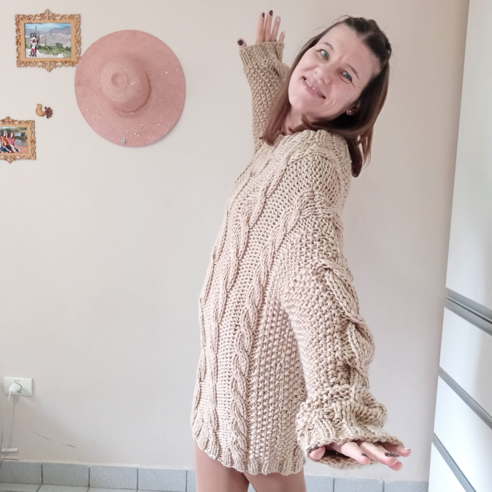

¿Por qué Fill Caresses?
Si buscás una traducción no la vas a encontrar , la adaptación fue solo mía, porque al tejer voy sintiendo entre mis manos esas pequeñas “caricias de hilo” que van rozando mis dedos al confeccionar cada prenda, juguete o accesorio…y es algo que es indescriptible para el que lo hace y lo siente; pero estoy segura de que esas mismas caricias las podés percibir cada vez que usás una prenda tejida a mano también, son mi regalo para vos, por la confianza que depositaste en mi trabajo.
¿Que vas a encontrar en mi Página?
Mucho amor! Y muchísimas ideas lindas, únicas y divertidas para vos! Acá vas a darte cuenta de que el tejido artesanal no es solo cosa de “abuelitas” o “bebés”, el tejido artesanal es vanguardia, y lo podés adaptar a vos, para que también sea parte tuyo. Ya sean prendas, accesorios, juguetes, parte de la decoración de tu hogar, el tejido artesanal es muy versátil y único. Estás lista para sentir esas caricias de hilo? Mirá y animate vos también!
